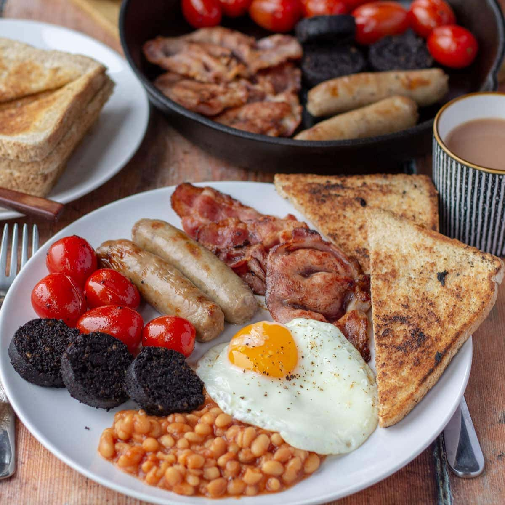

Breakfast is the most important meal of the day! At least I think so, because somebody said that I think. Or maybe.. nvm back to the point. Breakfast is really important and it starts your day. So you better get it good. Here are a couple breakfast recipes!
Choose your breakfast
Breakfast Sandwich:
You really can't go wrong with a sandwich, but some are still better than others, here is a goated breakfast sandwich recipe:
Ingredients:
A croissant
Salty bacon or meat of your choice
2 eggs :)
4 slices of cheese of your choice
Sauce of your choice
SALT
Intructions:
Cut your croissant in 2, toast your croissant for 2 minutes in a oven at 170°c(350°f)
- With your bacon cut them then sear them for 1 minute on each side on medium-low heat, then take them out but not the fast
Crack and scramble your eggs. In a pan with the leftover bacon fat from earlier, soft scramble your eggs, add in your salt gradually as you scramble your eggs
Assemble your sandwich and FEAST😋🥪🥐
Pancakes:

Pancakes is borderline dessert, butttt I think it still counts as breakfast. There is one thing for sure though, and that is that pancakes are really flippin good 😋. This recipe is for 8 servings
Ingredients:
18g(1½ cup) all purpose flour
16g(3½) baking powder
5g(1 tbsp) white sugar
A bit of salt
300ml(1¼ cup) milk
42g(3 tbsp) butter(melted)
1 egg
As much maple syrup as you please
Intructions:
Sift the flour, baking powder, sugar and salt into a large bowl. make a well in the center and add the milk,egg and melted butter in it. Mix until smooth
Heat a lightly oiled pan/skillet on medium-high heat, pour the batter into the pan, around 60g batter per pancake.Cook until bubbles form and flip it, cook until golden brown and repeat.
Pour some maple sryup on the top and FeAsT😋🥞🥞
Full english breakfast:
The full english breakfast is probally the most fulfilling breakfast. It has pretty much everything you want, it's like the goat of breakfasts. Anyways, here is a recipe for 1 full english breafast
Ingredients
2 sausages
3 strips of bacon
A handful of button mushrooms
1 egg
100g baked beans
Salt and pepper
Butter
Intructions:
In a pan or skillet, pour in just a little bit a of vegetable oil, and cook your sausages and bacon in it . Cook them until brown, then flipping them. After that, take them out and set it aside but leave the fat in the pan.
In the same skillet/pan, sear the mushrooms until brown and carmelized, adding salt and pepper with it.
Fry the bread with some butter until beautiful golden brown.
Fry the eggs sunny side up and season with salt and pepper.
Warm the beans up in the pan
Plate everything and feast😋🥓🥖🍞🍳